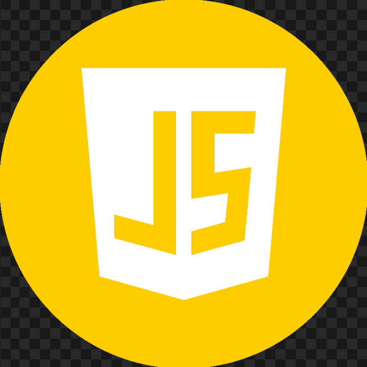
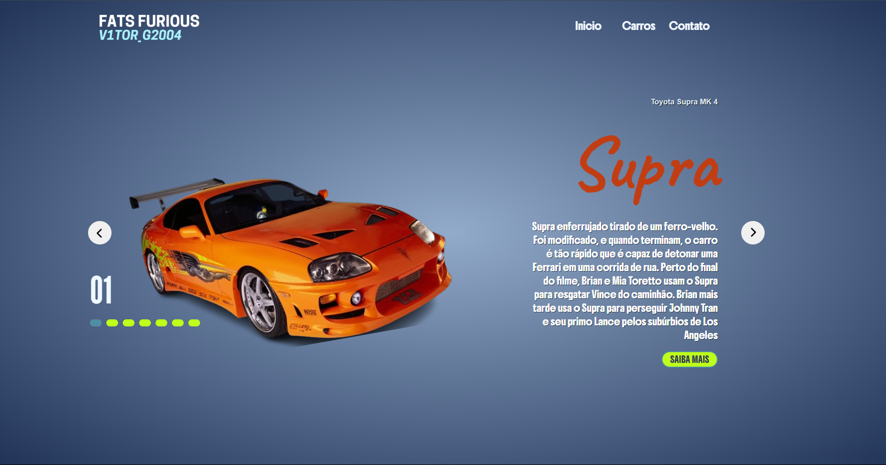

Sobre mim
Buscando constantemente aprimorar minhas habilidades e crescer na área da programação, desenvolvendo
interfaces práticas, modernas e funcionais. Gosto de transformar ideias em soluções criativas utilizando
HTML, CSS e JavaScript.


Sou apaixonado por tecnologia, especialmente pela programação, mas também tenho forte afinidade com hardware. Tenho conhecimento prático em montagem e manutenção de computadores, desde a escolha dos componentes até a montagem de máquinas personalizadas para diferentes finalidades, como uso doméstico, profissional ou gamer..
Projetos
Fast Furious - Carros
Projeto web desenvolvido com HTML e CSS que apresenta uma coleção de carros icônicos inspirados na franquia Velozes e Furiosos. O site foi criado para fãs de velocidade e cultura automotiva, destacando veículos clássicos e modernos que marcaram a saga, com foco em estilo, desempenho e personalidade. O projeto possui navegação simples e intuitiva.
imagem do projeto

mini site
Acesse o projeto acima por completo no botão abaixo.
Ver projetoEstude – Incentivo
Projeto web desenvolvido com HTML e CSS com o objetivo de incentivar o hábito do estudo, a disciplina e a persistência. O site apresenta mensagens motivacionais voltadas para estudantes e pessoas em busca de desenvolvimento pessoal, reforçando a importância do foco, da constância e do esforço diário para alcançar objetivos acadêmicos e profissionais. Com um layout simples e direto, o projeto foi criado como prática de front-end e também como uma forma de transmitir motivação e inspiração por meio da tecnologia.
imagem do projeto
mini site
Acesse o projeto acima por completo no botão abaixo.
Ver projetoGrounded - Entretenimento
Projeto web desenvolvido com HTML e CSS que apresenta o jogo Grounded, um título de sobrevivência cooperativa onde o jogador é reduzido ao tamanho de uma formiga em um quintal repleto de perigos e desafios. O site contém informações gerais sobre o mundo do jogo, sua mecânica de exploração, sobrevivência e cooperação com até três amigos, além de links para acompanhar mais sobre o jogo e acessar a página oficial e loja. Criado como prática de front-end, o projeto demonstra organização visual, conteúdo claro e foco em apresentar uma experiência envolvente para fãs do gênero de jogos de sobrevivência.
imagem do projeto